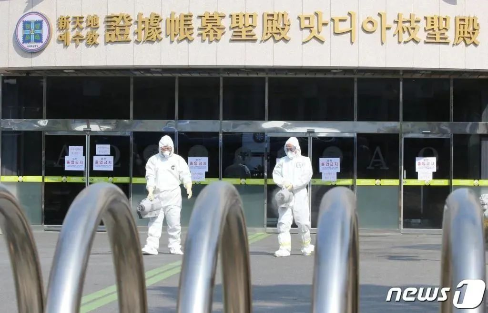
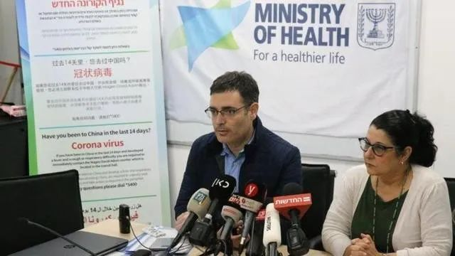

中国疫情蔓延初步遏制，全球何以多地聚集感染？
原文链接 备份链接 IMF认为，若一切向好的方向发展，中国经济有望从二季度开始恢复正常。近日个别国家和地区确诊病例激增，确诊首例新冠病毒感染病例的国家和地区也在增加，是新感染群体的感染源越来越难以查明？还是疫情传播到了某个新的临界点？ …

据韩联社报道，韩国中央防疫对策本部23日通报，截至当地时间23日上午9时，韩国新增123例感染新型冠状病毒的确诊病例，累计确诊增至556例，死亡病例增至4例。

工作人员在“新天地”教会前消毒
报道称，新增确诊病例中，与新天地大邱教会有关的人员共75例。目前，韩国卫生部门已要求超过9000名“新天地教会”成员进行自我隔离。
另据中央防疫对策本部消息，韩国第3例死亡病例是一名41岁的男性，被发现在庆尚北道庆州的自家中身亡，在他死亡后进行的新冠病毒测试结果呈阳性。第4例死亡病例是一名57岁的男性，是清道大南医院的相关人员，防疫部门正在调查具体死因。此前出现的第1和2例死亡病例均是清道大南医院的住院患者。
此外，在韩国南部城市大邱，一所幼儿园内出现了4岁儿童被确诊感染的情况。据了解，这是目前韩国新型冠状病毒确诊感染者中，年龄最小的感染者。

韩国总理：将为防止疫情扩散尽一切努力
据韩联社22日报道，韩国国务总理丁世均当天在韩国政府首尔大楼对国民发表讲话。丁世均在讲话中呼吁韩国全体国民暂停宗教活动等聚集在室内或是在人群密集的户外举行的活动。
“韩国政府将根据法律和原则，严厉应对阻碍政府防疫工作、囤积居奇、聚众集会等让他人感到不安的行为。”丁世均说。
丁世均指出，尽管新冠病毒在轻症阶段就具有较大的传染力，但是其致死率不高，只要尽早发现病情并接受隔离治疗定可以治愈。他强调，韩国政府在透明地公开有关疫情的一切情况，因而他希望全体国民也如实报告个人情况。
丁世均还表示，韩国的医疗体系达到世界顶尖水平，并拥有抗击传染病的丰富经验，“我希望全体国民相信政府和医务人员，并积极配合，不必过度恐惧和不安，不过需做好勤洗手等个人卫生防护工作。”丁世均说。
暂不上调新冠疫情预警级别
韩国中央应急处置本部副本部长金刚立22日在记者会上表示，政府决定继续将新冠肺炎(COVID-19)的预警级别维持在第二高的“警惕”级别，暂不上调。
金刚立表示，最高级别的“严重”级别是在全国范围内出现社区传播现象时采取的防疫机制。目前，国内新冠疫情集中发生在特定地区、特定团体和设施。政府将大邱和庆尚北道地区作为传染病特殊管理地区来管理，在实际工作中采取等同于“严重”级别时的防疫措施。
疫情急剧扩散 首尔民众仍大规模集会
连日来，韩国多部门发布系列措施以遏制疫情扩散。韩国国务总理丁世均表态“举全国之力克服疫情”。但在实际中，一些措施未见其效。

2月22日，大批韩国首尔民众不顾官方禁令，如期举行游行集会。此前因新冠肺炎疫情蔓延，首尔市政府要求多地禁止集会。但集会组织者曾表示禁令毫无依据，依期在光华门举行了每周六的集会。部分参会者不仅没戴口罩，甚至分食食物。
首尔市市长朴元淳到场劝告集会者应为自身和他人的安全考虑，并要求他们解散离开，却遭现场抗议辱骂。根据相关的集会禁令，违者将被罚款300万韩元。但亦有组织者曾表示不如期举办损失更大。
韩国一航班被以色列拒绝后原路返回
当地时间2月22日晚（北京时间2月23日凌晨），韩国大韩航空KE957航班降落以色列本古里安机场后，航班上近200名韩国等国（非以色列）乘客被拒绝进入以色列国土，12名以色列乘客被直接运送回家隔离14天。这架航班在完成加油和补充餐饮后，定于当地时间22日晚10点启程飞回韩国首尔。

以色列卫生部表示，连日来，韩国的新冠肺炎病例急剧增加，其中包括9名刚刚在以色列结束旅程而确诊染病的韩国人。目前在以色列旅行的大约一千名韩国游客已被告知：避免进入公共场所，自觉隔离在旅馆中，等待有关部门采取相应措施。
据报道，23日以色列总理内塔尼亚胡将召集一个紧急特别会议，商讨如何应对新冠肺炎在以色列的蔓延趋势。
另据报道，以色列驻华大使何泽伟15日与确诊9人的韩国旅行团乘坐同一航班返回首尔，因此也被隔离。以色列外交部称，以驻华大使将在北京继续接受隔离，但其他使馆工作人员不会受到任何限制。
美提高对韩旅行警示级别
随着韩国疫情的迅速发展，美国国务院当地时间22日将对韩旅行警示级别从等级1提高到等级2，即呼吁所有赴韩旅行公民“保持警惕”。美国国务院旅行警示级别分为四级，第3级是“重新考虑出行”，第4级则为“不要前往”。
美国国务院在通告中称，韩国新冠疫情出现“持续的社区传播”，这意味着“韩国人民感染了新冠病毒，但他们如何感染、从何感染并不清楚，而疫情扩散还在持续”。
综合环球网、央视新闻、海外网、新京报、中国新闻网等


推荐阅读

点击大图 |韩国疫情何以突然暴发？

点击大图 |销售过期8年口罩 物美采销流程现纰漏涉及门店或超17家

原文链接 备份链接 IMF认为，若一切向好的方向发展，中国经济有望从二季度开始恢复正常。近日个别国家和地区确诊病例激增，确诊首例新冠病毒感染病例的国家和地区也在增加，是新感染群体的感染源越来越难以查明？还是疫情传播到了某个新的临界点？ …
原文链接 备份链接 IMF认为，若一切向好的方向发展，中国经济有望从二季度开始恢复正常。近日个别国家和地区确诊病例激增，确诊首例新冠病毒感染病例的国家和地区也在增加，是新感染群体的感染源越来越难以查明？还是疫情传播到了某个新的临界点？ * …
原文链接 备份链接 据路透社报道，2月22日，伊朗卫生部发言人贾汉普尔表示，伊朗新检测出10例新冠肺炎病例，其中1例已经死亡，伊朗确诊病例总数达到28例。 “伊朗所有城市可能都出现冠状病毒” 贾汉普尔表示，新增的10个被确诊病例中，8个 …
原文链接 备份链接 图片来源：pexels 记者：肖恩 “ 韩国新增的3例病例感染路径不明。韩国卫生部门认为，从国内外疫情来看，新冠肺炎疫情已经进入新局面。 ” 就在日本正为国内新型冠状病毒肺炎疫情的严峻形势忧心的同时，邻国韩国也在为抗疫 …
原文链接 备份链接 伊朗库姆。图片来源：pixabay 文：央视新闻 雷湘平 据伊朗英语新闻电视台报道，伊朗卫生部发言人贾汉普尔当地时间22日表示，伊朗被确诊的新冠病毒肺炎患者数量达到了28人，其中5人已经死亡。贾汉普尔表示，在21—22 …